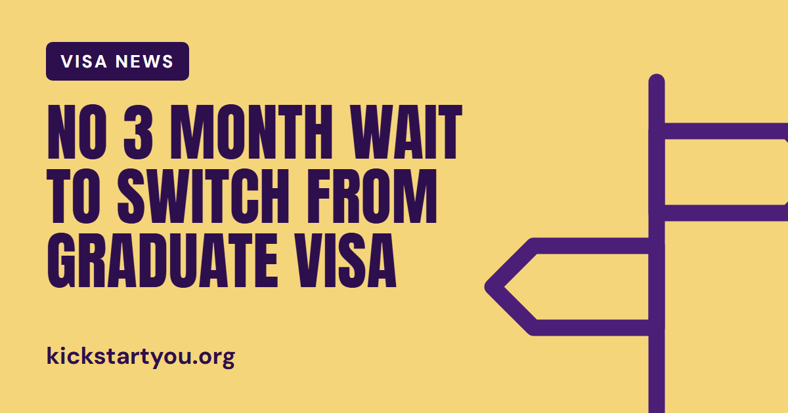

News · 29 October 2026 · From The Weekly Kick
Visa newsGraduate visa: no need to wait for your last 3 months to switch

If you're on a Graduate visa and hoping to stay in the UK in a sponsored job, timing matters. Many people believe they can only switch to another visa in the last 3 months of their Graduate visa, but gov.uk sets no such rule.
What the rules say
You cannot extend a Graduate visa. gov.uk says you may be able to switch to a different visa instead, for example a Skilled Worker visa. This is the main UK work visa, and it needs a job offer from an employer with a sponsor licence.
On timing, the gov.uk page on switching to a Skilled Worker visa says you must apply online before your current visa expires. It does not say you have to wait until your current visa is close to ending.
Where the 3 months idea comes from
There are two 3 month rules on the Skilled Worker visa pages. Neither is about how long is left on your Graduate visa.
- You can apply up to 3 months before the day you are due to start work. This date is on your certificate of sponsorship, the electronic record your employer gives you.
- You must apply within 3 months of getting your certificate of sponsorship.
Worth knowing before you switch
- Your job must meet the Skilled Worker rules, including the minimum salary. For most jobs this is £41,700 a year or the going rate for the job, whichever is higher, though it can be lower in some cases.
- You must not travel outside the UK, Ireland, the Channel Islands or the Isle of Man until you get a decision. If you do, your application will be withdrawn.
- You'll usually get a decision within 8 weeks.
- Your partner's or children's visas do not switch automatically. They can apply at the same time as you, or at any time before their current visa expires.
Where to check
The Graduate visa page explains how long your visa lasts and what you can do with it. The Skilled Worker visa guide covers switching, the job and salary rules, and both 3 month timings. Rules can change, so always check the latest version on gov.uk.
Where to check
Read the official details: gov.uk: Graduate visa
Also see: gov.uk: Skilled Worker visa
This isn't immigration advice. For your own situation, check gov.uk or a regulated immigration adviser.